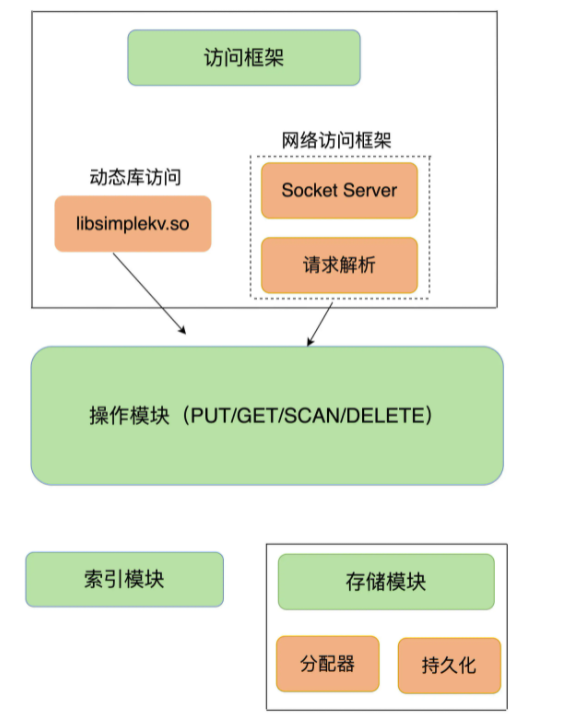
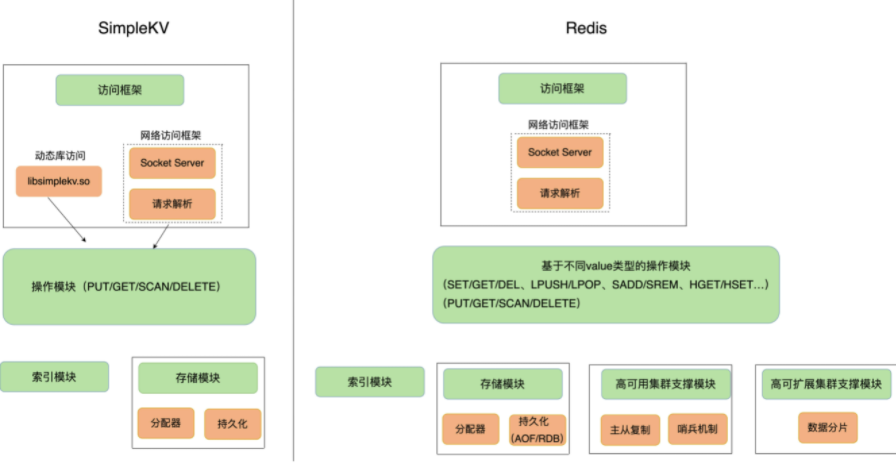

简单key-value数据库基础架构
数据模型
对于键值数据库而言，基本的数据模型是 key-value 模型。
key是string类型。
value的类型有String、哈希表、列表、集合等（Redis 能够在实际业务场景中得到广泛的应用，就是得益于支持多样化类型的 value）。从使用的角度来说，不同 value 类型的实现，不仅可以支撑不同业务的数据需求，而且也隐含着不同数据结构在性能、空间效率等方面的差异，从而导致不同的 value 操作之间存在着差异。
操作接口
简单key-value数据库，对一个键值的操作接口基本包含4中操作：
- PUT：新写入或更新一个 key-value 对；
- GET：根据一个 key 读取相应的 value 值；
- DELETE：根据一个 key 删除整个 key-value 对。
- SCAN：根据一段 key 的范围返回相应的 value 值。
- EXISTS：判断某个 key 是否存在。
存储位置
数据库存储可以存储在内存和磁盘上：
- 内存：保存在内存的好处是读写很快，毕竟内存的访问速度一般都在百 ns 级别。但是，潜在的风险是一旦掉电，所有的数据都会丢失。
- 保存在外存，虽然可以避免数据丢失，但是受限于磁盘的慢速读写（通常在几 ms 级别），键值数据库的整体性能会被拉低。
因此，如何进行设计选择，我们通常需要考虑键值数据库的主要应用场景。
内部框架
大体来说，一个键值数据库包括了访问框架、索引模块、操作模块和存储模块四部分（见下图）。

访问模块
访问模式通常有两种：
- 一种是通过函数库调用的方式供外部应用使用，比如，上图中的 libsimplekv.so，就是以动态链接库的形式链接到我们自己的程序中，提供键值存储功能。
- 另一种是通过网络框架以 Socket 通信的形式对外提供键值对操作，这种形式可以提供广泛的键值存储服务。在上图中，我们可以看到，网络框架中包括 Socket Server 和协议解析。
索引模块
采用索引模块来定位。索引的作用是让键值数据库根据 key 找到相应 value 的存储位置，进而执行操作。索引的类型有很多，常见的有哈希表、B+ 树、字典树等。不同的索引结构在性能、空间消耗、并发控制等方面具有不同的特征。例如，Memcached 和 Redis 采用哈希表作为 key-value 索引，而 RocksDB 则采用跳表作为内存中 key-value 的索引。
一般而言，内存键值数据库（例如 Redis）采用哈希表作为索引，很大一部分原因在于，其键值数据基本都是保存在内存中的，而内存的高性能随机访问特性可以很好地与哈希表 O(1) 的操作复杂度相匹配（哈希和B+树的区别在于： 哈希O(1)，跳表O(logn)，这是性能上的差距。 功能上的差异是：哈希只能进行单值查找，跳表可以进行数值范围查找）。
操作模块
索引模块负责根据 key 找到相应的 value 的存储位置。对于不同的操作来说，找到存储位置之后，需要进一步执行的操作的具体逻辑会有所差异：
- 对于 GET/SCAN 操作而言，此时根据 value 的存储位置返回 value 值即可；
- 对于 PUT 一个新的键值对数据而言，需要为该键值对分配内存空间；
- 对于 DELETE 操作，需要删除键值对，并释放相应的内存空间，这个过程由分配器完成。
存储模块
分配器
常用的内存分配器 glibc 的 malloc 和 free，但是，键值数据库的键值对通常大小不一，glibc 的分配器在处理随机的大小内存块分配时，表现并不好。一旦保存的键值对数据规模过大，就可能会造成较严重的内存碎片问题。因此，分配器是键值数据库中的一个关键因素。对于以内存存储为主的 Redis 而言，这点尤为重要。Redis 的内存分配器提供了多种选择，分配效率也不一样，后面我会具体讲一讲这个问题。
持久化
Redis 提供了持久化功能。不过，为了适应不同的业务场景，Redis 为持久化提供了诸多的执行机制和优化改进，后面我会和你逐一介绍 Redis 在持久化机制中的关键设计考虑。
小结
为了支持更加丰富的业务场景，Redis 对上面提到的组件或者功能进行了扩展，或者说是进行了精细优化，从而满足了功能和性能等方面的要求。

从这张对比图中，我们可以看到，从 基础key-value数据库演进到 Redis，有以下几个重要变化：
- Redis 主要通过网络框架进行访问，而不再是动态库了，这也使得 Redis 可以作为一个基础性的网络服务进行访问，扩大了 Redis 的应用范围。
- Redis 数据模型中的 value 类型很丰富，因此也带来了更多的操作接口，例如面向列表的 LPUSH/LPOP，面向集合的 SADD/SREM 等。
- Redis 的持久化模块能支持两种方式：日志（AOF）和快照（RDB），这两种持久化方式具有不同的优劣势，影响到 Redis 的访问性能和可靠性。
- SimpleKV 是个简单的单机键值数据库，但是，Redis 支持高可靠集群和高可扩展集群，因此，Redis 中包含了相应的集群功能支撑模块。